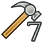
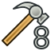

Вид
Содержит все функции, касающиеся показа модели, такие как показ панелей, масштабирование и т.д...
{kind=link}
- Стандартные виды
-
 Уместить всё
Уместить всё -
 Уместить выделенное
Уместить выделенное -
 Аксонометрия 0
Аксонометрия 0 -
 Спереди 1
Спереди 1 -
 Сверху 2
Сверху 2 -
 Справа 3
Справа 3 -
 Сзади 4
Сзади 4 -
 Снизу 5
Снизу 5 -
 Слева 6
Слева 6 - Повернуть влево
- Повернуть вправо
-
{kind=link}
{kind=link}
- Положения камеры
- Сохранить положения в файл...
- Загрузить положения в файл...
- Запомнить
- Забыть все положения
{kind=link}
- Стерео
-  Стерео красный/циановый
- Стерео квадро-буфер
- Стерео с чредованием строк
- Стерео чередование столбцов
-
 Выключить стерео
Выключить стерео -  Выделение позиции камеры
{kind=link}
{kind=link}
- Масштаб смотри так же Модель мыши
-
 Увеличить
Увеличить -
 Уменьшить
Уменьшить -
 Увеличить область (....)
Увеличить область (....)
-
- Окно документа
- Показать/скрыть оси координат
- О назначении текстур смотрите Macro Texture Objects и Vista texture
- Видимость
- Скрыть/показать выделенное (....) (... "пробел")
- Показать выделенное
- Скрыть выделенное
- Инвертировать все видимости
- Показать все объекты
- Скрыть все объекты
- Откл/вкл выделяемость
-
 Скрыть/показать всё (Toggle measurement)
Скрыть/показать всё (Toggle measurement) -
 Стереть измерение
Стереть измерение
{kind=link}
- Скрыть/показать выделенное
- Навигация/редактирование
- Внешний вид...
- Стиль представления
- Материал
- Отображение
- Размер точки
- Толщина линии
- Прозрачность
- Прозрачность линий
- Случайный цвет
- Верстак
- <none>
-
 Arch
Arch -
 Assembly
Assembly -
 Complet
Complet -
 Draft
Draft -
 Drawing
Drawing -
 Fem
Fem -
 Immage
Immage - Info
-
 Inspection
Inspection - Mesh
-
 OpenSCAD
OpenSCAD -
 Part
Part -
 Part Design
Part Design -
 Plot
Plot - Points
-
 Raytracing
Raytracing - Reverse Engineering
- Robot
-
 Ship
Ship -
 Sketcher
Sketcher - Spreadsheet
-
 Start Center
Start Center -
 Test framework
Test framework -
 Web
Web
{kind=link}
{kind=link}
- Инструменты
- Файл
- Макрос
- Вид
- Part
- Геометрия эскиза
- Ограничения эскиза
- Проектирование детали
- Bolts
- Info
- FreeCAD Part
- Screw
- Draft Snap
- Панели
- Отчёт
- Дерево документа
- Просмотр свойств
- Просмотр выделения
- Комбо панель
- Консоль Python
- Строка состояния